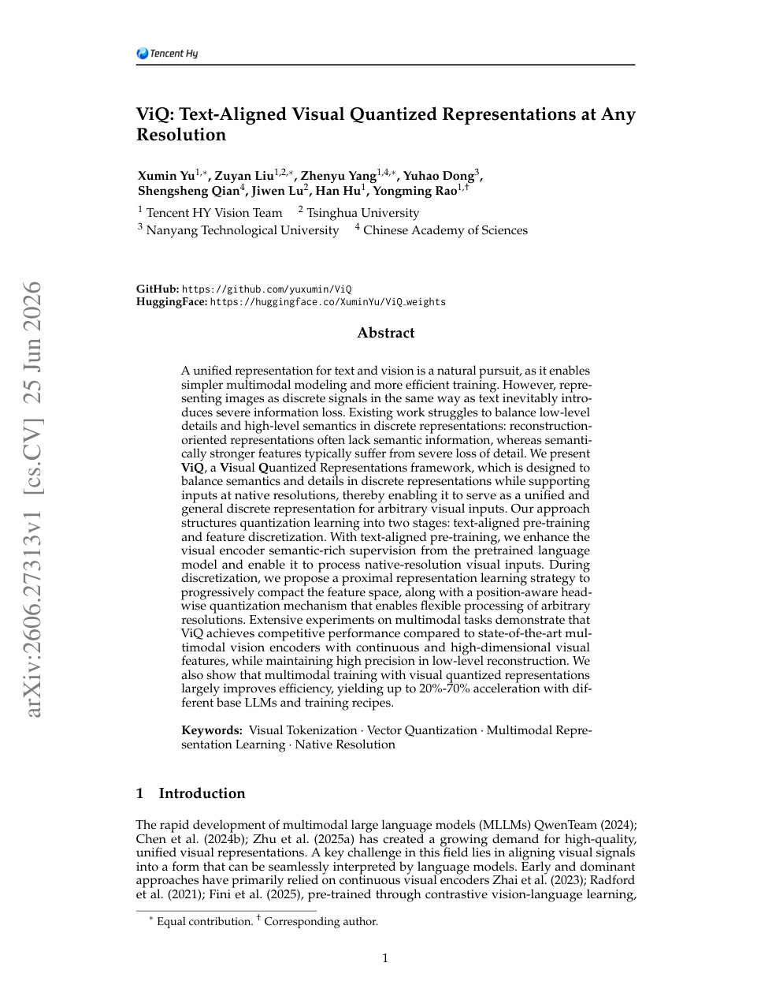
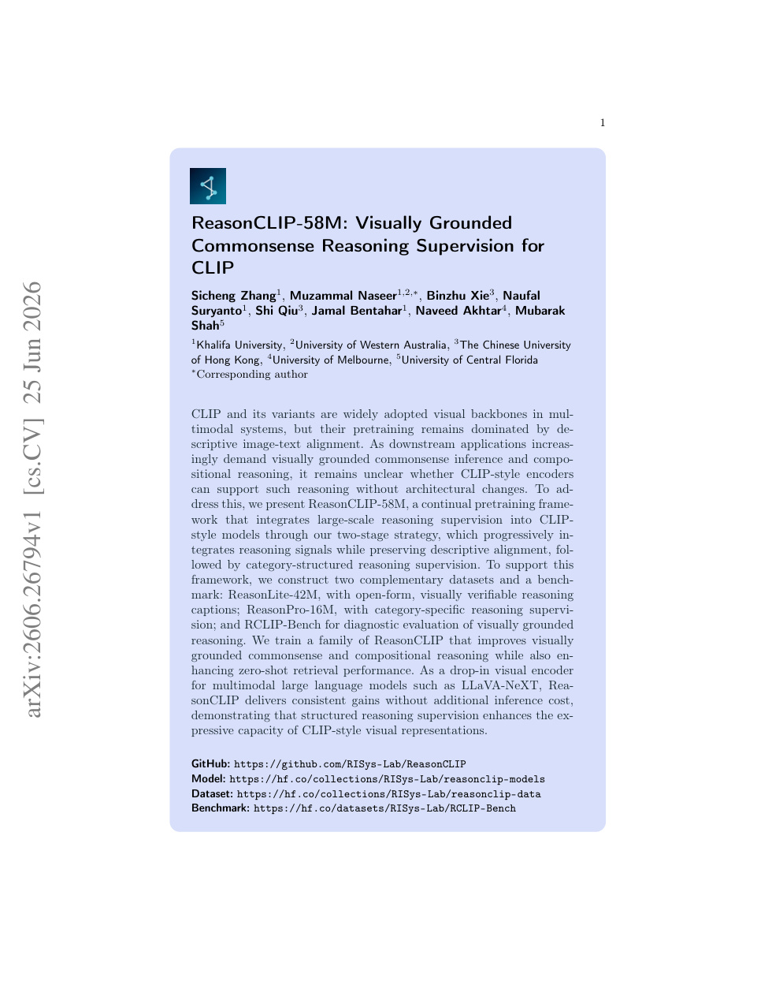
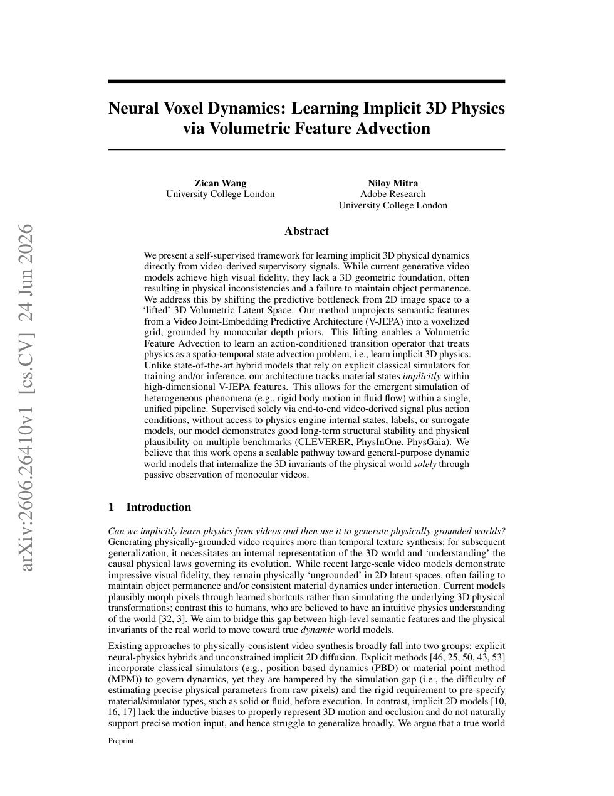
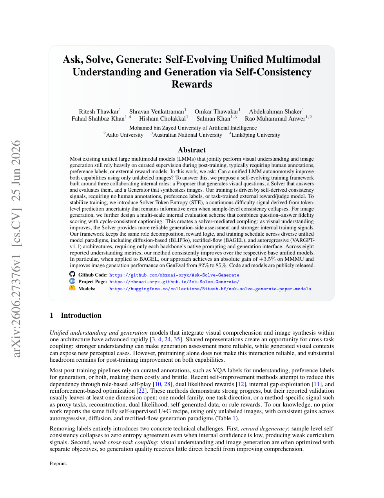

今日主线 · 状态复盘；arXiv new 已收录；ECCV 2026
ViQ：任意分辨率视觉输入被压成 text-aligned discrete representation，直接影响统一多模态模型的视觉 token 接口
任意分辨率视觉输入被压成 text-aligned discrete representation，直接影响统一多模态模型的视觉 token 接口。

任意分辨率视觉输入被压成 text-aligned discrete representation，直接影响统一多模态模型的视觉 token 接口。

高相关；详见方法、贡献和实验边界。
方法：任意分辨率视觉输入被压成 text-aligned discrete representation，直接影响统一多模态模型的视觉 token 接口

高相关；详见方法、贡献和实验边界。
方法：在 CLIP-style encoder 上加入视觉可验证 reasoning supervision，同时保持 descriptive alignment

高相关；详见方法、贡献和实验边界。
方法：用 V-JEPA semantic features 构建 3D latent dynamics，是视频 SSL 与 world model 的强交叉

高相关；详见方法、贡献和实验边界。
方法：指出 self-consistency 自训练会走语言捷径，提出显式压住视觉 token attention 的奖励

高相关；详见方法、贡献和实验边界。
方法：用未标注图像让统一 LMM 自己提问、回答和生成图像，接近无人工标注的 VLM 自监督训练